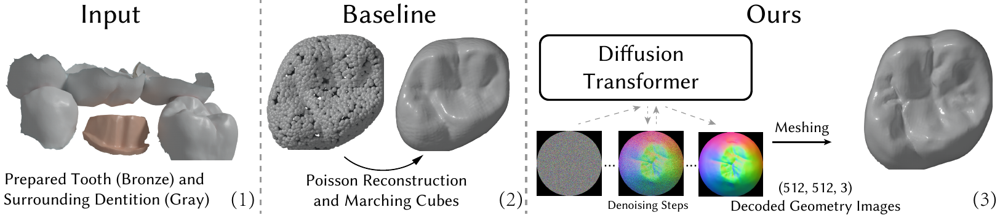
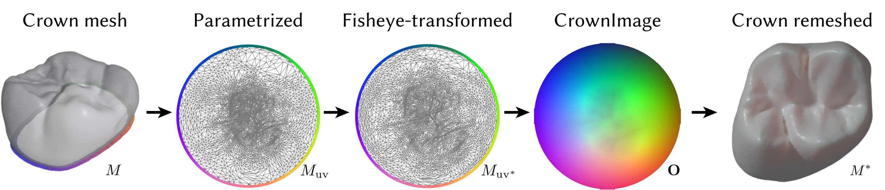
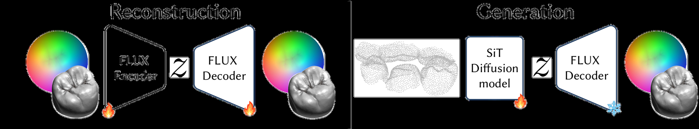
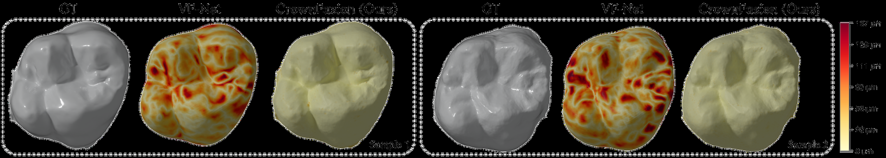
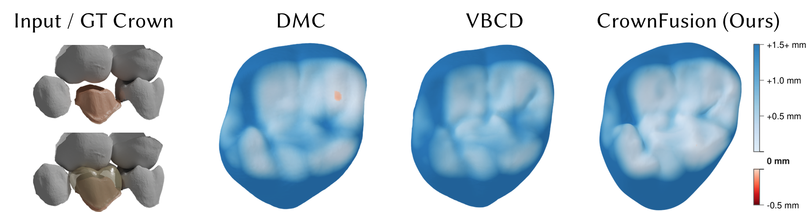
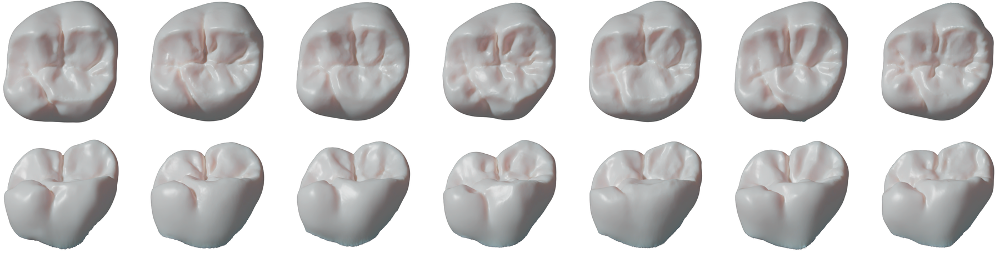
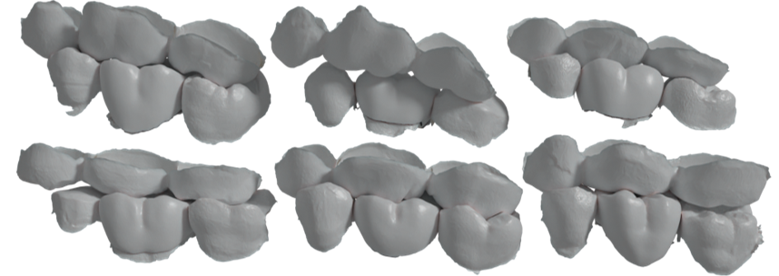

Generated vs technician-designed
Same patient case; the generated crown carries its own complete fissure network and cusp pattern rather than copying the reference.
Abstract
We introduce CrownFusion, a latent diffusion model to generate 3D dental crown designs from geometry images, a 2D-grid encoding of surface coordinates. Departing from traditional approaches that use point clouds, our CrownImage representation not only unlocks the full power of image-based generative architectures, but also preserves fine geometric detail by operating at far higher spatial resolutions than point clouds to alleviate smoothing artifacts in the 3D generation.
Conditioned on jointly learned embeddings of the surrounding dentition, our probabilistic diffusion model produces anatomically plausible crowns with morphological variations tailored to individual patient cases. To accommodate multiple valid designs, we propose an occlusal fit metric based on proximity to the antagonist teeth. We evaluate our method through quantitative experiments and qualitative studies involving expert testimonials. We also release the FDI 16 Crown Dataset, comprising 11,513 annotated intra-oral scans, to support future research in dental CAD.
Why crown design needs a generative model
A clinically acceptable crown must achieve adequate occlusal fit with the opposing dentition, maintain functional contact without hyperocclusion, and reflect natural tooth morphology — including well-defined occlusal grooves that direct food flow during mastication. In practice, however, there is no single correct crown for a given case. Multiple clinically acceptable designs exist, shaped by the technician's training, experience, and aesthetic judgement.
This motivates a generative approach that captures a space of clinically acceptable solutions rather than predicting a single outcome. Prior work is limited by its choice of representation: point cloud methods frame crown design as shape completion and tend to erode sharp fissures, while depth image methods are confined to a single viewpoint and discard 3D information — for instance, the lingual surface of an antagonist tooth that directly contacts the generated crown may be entirely occluded.
CrownImage: teeth as geometry images
We represent a dental crown mesh as a 3-channel geometry image, with each pixel storing an (x, y, z) surface coordinate as color. Because a tooth is a topological zero-genus surface, a single global chart suffices — no patch segmentation or stitching required. We flatten the mesh into a disk via boundary-fixed harmonic parameterization, then apply a fisheye-style radial transform that allocates more resolution to the center (the occlusal surface) and less to the outer rim (the axial surfaces).

Unlike single-view depth renderings, geometry images retain full 3D geometric information, while supporting far higher spatial resolutions than point clouds to better preserve fine-grained, high-curvature tooth features.
Method
CrownFusion is a latent diffusion pipeline operating on CrownImages. A finetuned FLUX VAE encodes geometry images into latent codes — finetuning is essential, since CrownImages encode continuous spatial coordinates rather than color values, and small latent errors map directly to geometric distortions on the reconstructed surface.
A Scalable Interpolant Transformer (SiT), trained from scratch, generates crowns in this latent space. It is conditioned on the surrounding dentition — the prepared tooth's neighbors, the antagonist, and the antagonist's neighbors — represented as a point cloud and encoded with a jointly trained shape encoder (3DShape2VecSet). The embedding is injected via cross-attention at each denoising step, letting the model infer occlusal surface features from the antagonist and cusp/fissure placement from the neighboring teeth. The margin line of the prepared tooth anchors the crown's seating position and constrains the geometry from below.

Results
Autoencoding fidelity
Since generation quality is bounded by the autoencoder, we first evaluate our VAE against point cloud-based autoencoders benchmarked on the FDI 16 Tooth Dataset. Baselines input and output 2,048 points; we convert our output CrownImage into a mesh and project each ground-truth point onto its surface.
| Metric | DPM | SetVAE | LION | FoldingNet | VF-Net | CrownFusion |
|---|---|---|---|---|---|---|
| CD (×10²) ↓ | 10.04 | 21.50 | 5.35 | 5.26 | 1.21 | 0.02 |
| EMD (×10²) ↓ | 43.98 | 59.24 | 22.85 | 33.67 | 6.30 | 0.45 |

Occlusal fit
Relying on a single technician-designed crown as ground truth is problematic, since designs vary substantially between technicians. We therefore evaluate occlusal fit by measuring proximity between the generated occlusal surface and the antagonist dentition (mean distance of the closest 10th-percentile of 30,000 sampled antagonist points), and report intersections — both count and area — since occlusal intersections require significant manual sculpting to correct.
| Model | Crown Similarity CD-L2 (mm) ↓ |
Bite Proximity 10% closest ↓ |
Intersections num ↓ |
Intersections area (mm²) ↓ |
|---|---|---|---|---|
| DMC | 0.433 | 0.734 | 256 | 1.110 |
| VBCD | 0.353 | 0.747 | 143 | 2.363 |
| CrownFusion (ours) | 0.412 | 0.733 | 127 | 0.612 |
| Ground truth | — | 0.716 | 12 | 0.0437 |
CrownFusion achieves the closest occlusal alignment to the antagonist teeth, with fewer intersections than both baselines — roughly half the intersection rate of DMC — and substantially smaller intersection area when they do occur.

Morphological variation
While marginal ridge height and gross cusp placement are constrained by the surrounding dentition, the occlusal surface is the primary locus of design freedom in clinical practice. Our samples vary exactly along these axes. Notably, the features that vary are those most difficult to sculpt manually — existing CAD tools primarily support local adjustments rather than global morphological changes.

Expert evaluation
Two dental professionals assessed generated crowns across all methods. They noted that CrownFusion produces well-defined occlusal anatomy, rarely generating the featureless surfaces typical of DMC's overly smooth crowns with shallow fissures and blunt cusps. Across DMC, VBCD, and even the reference crowns, fissures occasionally appear as isolated incisions without corresponding cusp development, yielding anatomically incoherent surfaces; CrownFusion was less prone to this. It does, however, occasionally produce flattened proximal surfaces that conform too closely to adjacent teeth rather than forming convex contacts.
FDI 16 Crown Dataset
We release the FDI 16 Crown Dataset: 11,513 anonymized intraoral scans collected through the 3Shape Dental System, with 1,000 scans held out for validation and testing respectively. Each scan is paired with the final crown restoration, designed by dental technicians in routine clinical workflows.
We focus on the FDI 16 tooth (upper right first molar) as it is frequently restored and presents the most complex occlusal morphology of any tooth type — four to five cusps, an oblique ridge, and a detailed fissure pattern — making it a challenging benchmark. All scans are centered on the FDI 16 crown with the gingiva removed via segmentation. Where available, scans include adjacent teeth on the preparation side (FDI 15, 17) and opposing teeth on the antagonist side (FDI 45, 46, 47).

Limitations
Our evaluation focuses on FDI 16; generalization across all tooth types remains to be validated. The disk topology of geometry images currently restricts the framework to single-tooth restoration, and conditioning on absent neighbouring teeth is not yet addressed. Generation time (~5 min per 8 samples on an RTX 4090) is a practical constraint, though the extensive literature on diffusion sampling acceleration transfers directly to our setting.
BibTeX
@inproceedings{ye2026crownfusion,
title = {CrownFusion: 3D Dental Crown Generation Using
Geometry Images and Latent Diffusion},
author = {Ye, Johan Ziruo and Yan, Xingguang and Hauberg, S{\o}ren and
Chang, Angel X. and Zhang, Hao and S{\o}ndergaard, Peter Lempel},
booktitle = {Medical Image Computing and Computer Assisted Intervention (MICCAI)},
year = {2026}
}